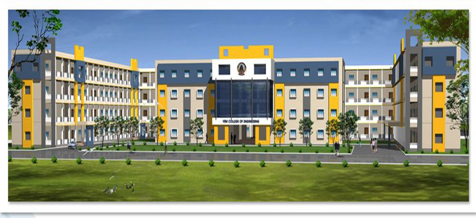
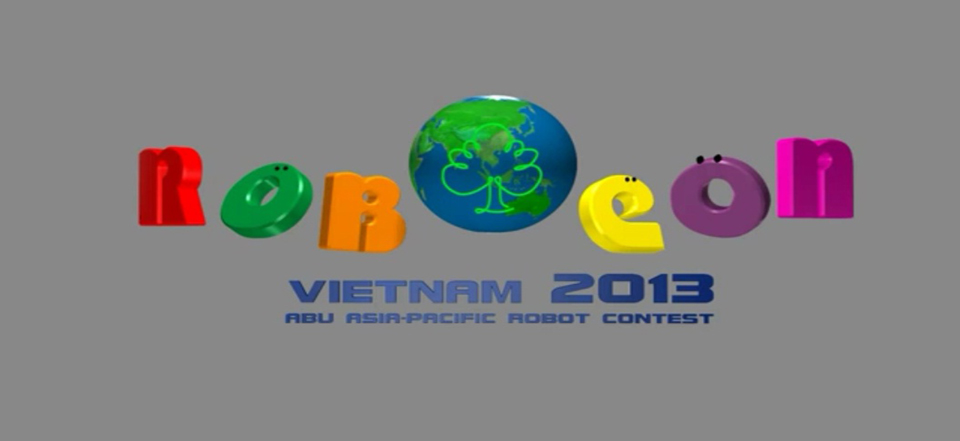

VSM ROBOCON
- 


- 

About ABU Robocon
The Asia-Pacific Robot Contest (ABU Robocon) is an Asian Oceanian College robot competition, founded in 2002 by Asia-Pacific Broadcasting Union. In the competition robots compete to complete a task within a set period of time. The contest aims to create friendship among young people with similar interests who will lead their countries in the 21st century, as well as help advance engineering and broadcasting technologies in the region. The event is broadcast in many countries through ABU member broadcasters.